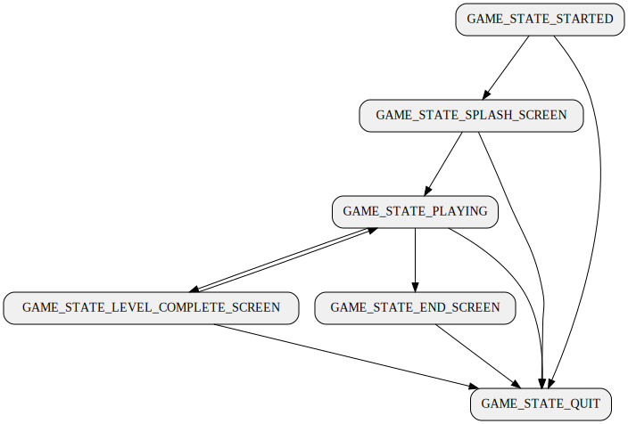

Introduction
Le projet Spacecorridor est un mini-jeu académique développé en C. Il a été réalisé dans le cadre du module universitaire Projet de synthèse.
Les objectifs du projet sont :
- Se familiariser avec le développement d’un jeu vidéo en C
- Prendre en main la bibliothèque SDL2 pour la gestion des graphismes, du texte et des entrées utilisateur
- Appliquer des bonnes pratiques de développement, notamment l’organisation du code, les tests et la documentation (Doxygen)
- Utiliser Git pour la gestion de versions, avec un historique clair et régulier
- Travailler efficacement en binôme, en assurant une répartition équitable des tâches

Auteurs et informations pédagogiques
- Auteurs : DANILKIN Artem, RUSCUK Emre
- Groupe : 3.1
- Année : 1ère Licence, 2ème semestre
- Université : Université de Lorraine, Faculté des Sciences et Technologies
- Module : Projet de synthèse
- Enseignant : SOUMIER Julien
Description détaillée du jeu
Spacecorridor est un « runner » spatial : le joueur pilote un vaisseau en vue de dessus, évoluant automatiquement vers le haut dans un couloir préétabli.
- Objectif : éviter des météorites et atteindre la ligne d’arrivée aussi rapidement que possible.
-
Commandes :
- Espace pour ignorer l’écran de démarrage
- WASD (QWERTY) / ZQSD (AZERTY) ou flèches ↑ ↓ ← → pour déplacer le vaisseau
- I pour activer/désactiver le mode d’invincibilité
- Échap pour quitter le jeu
-
Affichage :
- Temps écoulé depuis le début du niveau, affiché en haut à droite
- Fond avec effet de parallaxe pour un rendu visuel dynamique
- La fenêtre peut être redimensionnée et le jeu fonctionne correctement sur n’importe quelle résolution
-
Son :
- Musique lors de l’écran de démarrage (splash screen)
- Effet sonore de collision à la mort
- Effet sonore de victoire à la fin
-
Visuel :
- Univers spatial rétro avec fond étoilé, blocs de météorites formant des murs, et vaisseau stylisé
- Contraste clair entre éléments et décor pour une lisibilité optimale

Installation des dépendances
Pour faire fonctionner Spacecorridor, installez d’abord les dépendances suivantes :
Sur Windows (MSYS2)
pacman -S mingw-w64-x86_64-gcc mingw-w64-x86_64-clang mingw-w64-x86_64-meson mingw-w64-x86_64-gdb mingw-w64-x86_64-python-pygments pacman -S mingw-w64-x86_64-SDL2 mingw-w64-x86_64-SDL2_gfx mingw-w64-x86_64-SDL2_image mingw-w64-x86_64-SDL2_mixer mingw-w64-x86_64-SDL2_net mingw-w64-x86_64-SDL2_pango mingw-w64-x86_64-SDL2_sound mingw-w64-x86_64-SDL2_ttf
Sur Ubuntu (ou similaire)
sudo apt install build-essential clang git pkg-config meson sudo apt install libsdl2-dev libsdl2-image-dev libsdl2-ttf-dev libsdl2-net-dev libsdl2-mixer-dev libsdl2-gfx-dev
Compilation
Dans un terminal Linux (ou similaire) or l’environment MSYS2 WINGW64, exécutez :
meson setup builddir meson compile
Ou simplement :
make
Exécution
Lancez l’exécutable ./builddir/spacecorridor, ou utilisez :
make run
Packaging
Pour créer une distribution Windows :
make dist
Génération de la documentation
Pour générer la documentation Doxygen :
make doxygen
Les pages Web seront produites dans builddir/doxygen/html/files.html.
Architecture logicielle et formules clés
Le jeu fonctionne en maintenant une machine à états :
La boucle de rendu n’est jamais bloquée, tout est asynchrone.
Chargment des niveaux
Les niveaux sont chargés à partir de fichiers PNG, leur nombre est déterminé automatiquement par la découverte des fichiers. Ils peuvent avoir n’importe quelles dimensions.
Logique
La logique du jeu est calculée dans un système de coordonnées indépendant de la résolution de la fenêtre et des textures, ainsi que de la position de la caméra. Les collisions entre objets sont détectées au pixel près, les proportions des objets sont tirées des textures.
Phisique
La position et la vitesse du vaisseau sont stockées dans l’état du jeu, tandis que l’accélération est recalculée à chaque image.
Il y a 3 forces : l’accélération constante vers l’avant, les contrôles de l’utilisateur et une force de traînée directement proportionnelle à la vitesse.
La position et la vitesse sont mises à jour à l’aide d’une simple méthode d’Euler.
La caméra est réglée pour s’approcher du point situé un peu en dessous du vaisseau en utilisant une décroissance exponentielle.
Accélérations combinées :
ax = Ix·vm − vx·cd
ay = −vc + Iy·vm − vy·cd
Mise à jour des vitesses :
vx ← vx + ax·Δt
vy ← vy + ay·Δt
Mise à jour des positions :
x ← clamp (x + vx·Δt, −L/2 + w/2, L/2 − w/2)
y ← y + vy·Δt
Suivi de la caméra :
offset ← offset + [-y + offset₀ − offset]·(1 − e−k·Δt)
Légende :
Ix, Iy ∈ {−1,0,+1} selon les touches (gauche/droite, haut/bas)
vc = vitesse de croisière,
vm = vitesse de mouvement clavier,
cd = coefficient de traînée,
Δt = temps après la dernière image,
L = largeur du niveau, w = largeur du vaisseau,
offset₀ = position initiale de la caméra, k = vitesse d’approche de la caméra vers le vaisseau.
Graphisme
Les objets sont placés dans leur position à l’écran à l’aide d’une fonction qui applique la transformation nécessaire. La police est rechargée dans la taille requise lorsque la taille de la fenêtre change.
Limitation du framerate
On lit le temps écoulé depuis le démarrage : ta = temps courant.
On calcule l’instant de la prochaine image : tn = tpréc + (1000 ÷ fpsmax).
Si tn > ta, on suspend l’exécution pendant Δt = tn – ta.
Problèmes rencontrés et solutions détaillées
-
Texte SDL2_ttf rendu en basse résolution : absence de
TTF_Init()et usage deTTF_RenderText_Solid(). Correction : ajout deTTF_Init()et passage àTTF_RenderUTF8_Blended()pour un rendu antialiasé. -
Latence clavier : traitement séquentiel trop lourd. Correction : suppression des délais, gestion de
SDL_PollEventrevue pour traiter tous les événements chaque frame. -
Vitesse liée au taux de rafraîchissement : déplacement plus rapide à 165 Hz qu’à 60 Hz. Correction : ajout de
last_frame_timeettime_since_last_frame(viaSDL_GetTicks64()) dansworld_t, et multiplication des pas de déplacement partime_since_last_frame. Ajustement des constantes de vitesse danssrc/constants.h. -
Sprite du vaisseau mal centré : ajustement des calculs de
dst.xetdst.ypour un centrage précis. -
Limitation d’un tableau statique de murs : migration vers allocation dynamique (
malloc) pour gérer un nombre variable d’obstacles et améliorer la gestion mémoire. -
Fuites mémoire avec SDL_ttf : les surfaces et textures créées pour le texte n’étaient ni libérées (avec
SDL_FreeSurfaceetSDL_DestroyTexture), ni la lib SDL_ttf quittée (manque deTTF_Quit). Correction : libération explicite de chaque surface et texture après usage, implémentation et appel declean_ttf()pour fermer proprement la sous-bibliothèque. -
Ressource introuvable sur système case-sensitive : le fichier police était nommé
COOPBL.TTFmais le code recherchaitCOOPBL.ttf, causant un échec de chargement sous Linux. Correction : renommage du fichier enCOOPBL.ttfpour correspondre exactement au nom utilisé dans le code.
Métrologie et performances

- Nombre total de commits : 62
-
Répartition des langages :
- C : ~94 % (739 lignes du code source, 346 lignes de commentaires)
- Meson : ~3,8 %
- Makefile : ~1,8 %
-
Performances (test sur Windows 11, Intel Core i7-12700KF, NVIDIA RTX 4070) :
- FPS moyen stable à 240 en mode plein écran (1920x1080)
- Taille de l’exécutable Windows et libraries : ~50.9 MiB